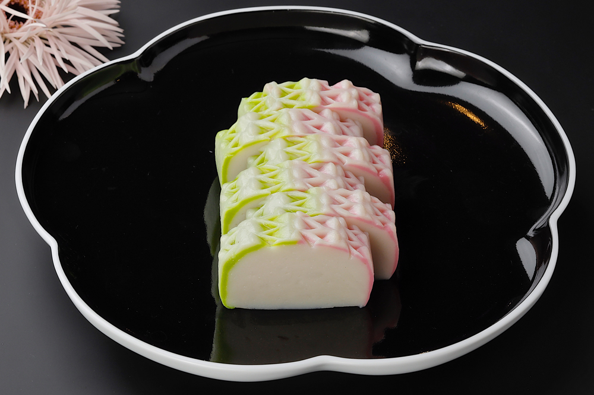

鈴廣のかまぼこづくり
かまぼこにはお魚の身を水で晒し、塩を加えてすり、形を作って蒸し上げます。
シンプルな食べ物だからこそ、素材のちから、職人の心や技、
ひとつひとつが大切です
天然素材とものづくり
鈴廣のかまぼこは天然素材を使い、化学調味料は一切使わず、保存料無添加でおつくりしています。
私たちの仕事は魚のいのちを人のいのちに移しかえるお手伝いと任じています。
素材のいのちを大切に、お魚が育つ海のこと、海を豊かにする森のこと
そして、小田原かまぼこの伝統を守る、私たちのものづくりの考え方をご紹介いたします。
